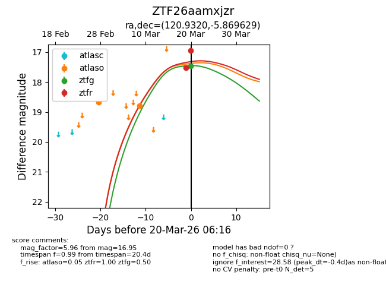
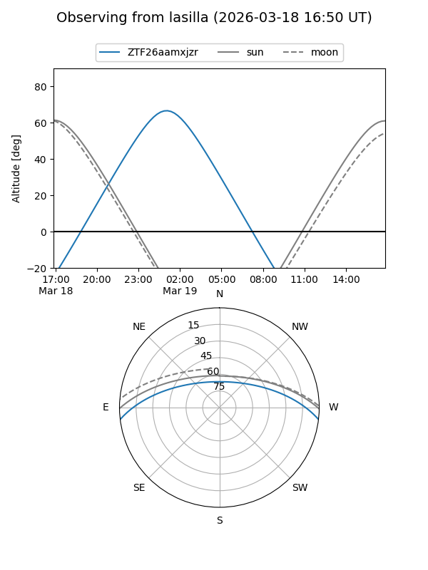
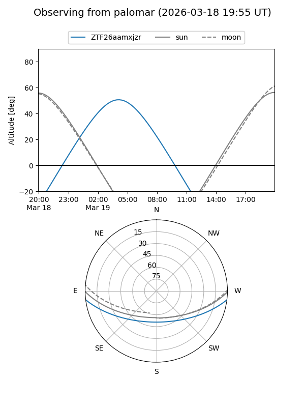
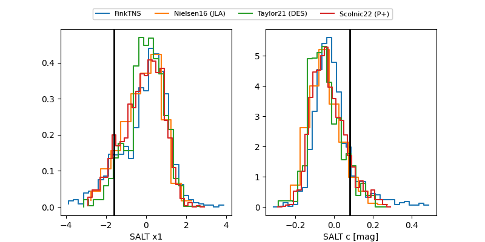

ZTF26aamxjzr
Target ZTF26aamxjzr at 2026-03-20 06:18
Aliases and brokers:
FINK: link
Lasair: link
ALeRCE: link
alt names
ZTF26aamxjzr (ztf,fink_ztf)
Coordinates:
equatorial (ra, dec) = 120.9320,-5.86963
equatorial (HMS+DMS) = 08:03:43.68,-05:52:10.66
galactic (l, b) = (226.7004,+13.18018)
Flags:
Photometry:
last atlaso=18.79, ztfg=17.45, ztfr=16.95
2 atlaso, 1 ztfg, 2 ztfr detections
Lightcurve

Visibility


Additional plots
